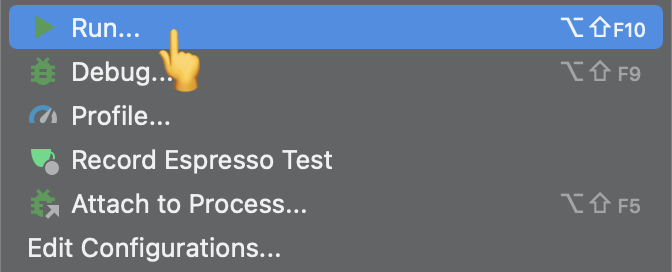

開発環境の構築
Kotlin 研修おつかれさまでした！
これから待ち受ける実習課題にそなえ、 Kotlin で Android 開発を行うための環境構築について記載します。
ゴール
- サンプルプロジェクトをclone する
- clone したサンプルプロジェクトを Android Studio で読み込む
- サンプルアプリを実行する
想定する事前準備
以下はあらかじめ用意されていることを想定
- ターミナルで git コマンドが実行できるようになっていること
- Android Studio (バージョン Bumblebee 2021.1.1 以降) がインストールされていること
サンプルプロジェクトを clone する
- サンプルプロジェクトは以下
- ターミナルを開き、任意の位置に clone する
- 以下のようなコマンドを打つ
$ git clone https://github.com/access-company/TrainingProject_Nekonosuzu.git
- 以下のようなコマンドを打つ
- 正常に完了すると、リポジトリのソースコード一式がダウンロードされる
clone したサンプルプロジェクトを Android Studio で読み込む
- Android Studio を起動し、Open を選ぶ

- ファイルエクスプローラが起動するので、先程 clone した TrainingProject_Nekonosuzu のフォルダを選び Open する
- ファイルではなくフォルダを選ぶ

- 自動的にビルドが始まり、必要なもののダウンロード等が始まる
サンプルを実行しよう
- Android 端末を PC に USB で接続しよう
- 事前に Android 側で開発者向けオプションと USB デバッグを有効にすること(参考）
- Android Studio の Run メニューからサンプルアプリを実行しよう

- うまく動いただろうか
- 実機がなくても、エミュレーターを作成して実行することができる
- 余裕があれば調べてやってみよう
- それでは、実習にのぞんでください！